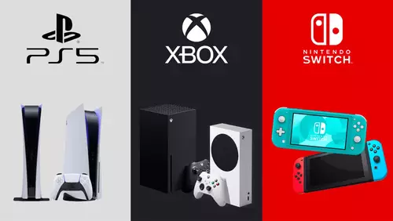

🌐 Crossplay: O fim das barreiras?
Imagine poder jogar com pessoas de diferentes plataformas sem se preocupar com limitações de console — essa realidade já faz parte da nova geração de jogos online "O crossplay".
Ele está reformulando o modo como os games são desenvolvidos, exigindo servidores unificados, equilíbrio entre tipos de controle e uma economia in-game consistente entre sistemas. Embora o processo envolva desafios técnicos, os resultados são visíveis: comunidades mais ativas, maior longevidade para os jogos e inclusão de públicos variados. Exemplos como Minecraft, Apex Legends e Genshin Impact demonstram como essa tendência veio para ficar. O apoio de grandes empresas como Microsoft, Epic Games e até Sony reforça que o crossplay será cada vez mais essencial no futuro dos games.